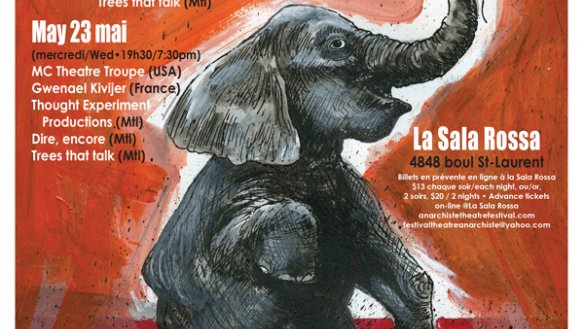
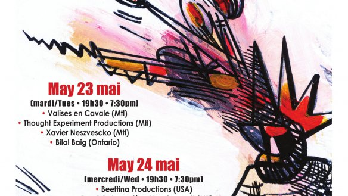

-
THE 13TH ANNUAL MONTREAL INTERNATIONAL ANARCHIST THEATRE FESTIVAL: MAY 22-23 2018
24 March 2018
Montreal’s annual International Anarchist Theatre Festival (FITAM) will be back for its thirteenth edition, May 22 and 23, 2018, 7:30pm, at la Sala Rossa.
-
Interview with Sandy Laplage
22 June 2017
The MIATF’s very own Sandy Laplage answered questions about the festival
-
MIATF 2017 Official Program
22 May 2017
DEDICATION MIATF 2017 – DEDICACE FITAM 2017
Since 2017 marks the 100th anniversary of the Russian Revolution, this edition of the MIATF is dedicated to the anarchists who participated in the revolution and to those who endured the Soviet repression that followed. We also dedicate the festival to the anarchist playwrite, poet, filmaker and journalist Armand Gatti (1924-2017). An anti-fascist throughout his life, Armand Gatti also fought in
the French resistance against the Nazis.
 Français
Français